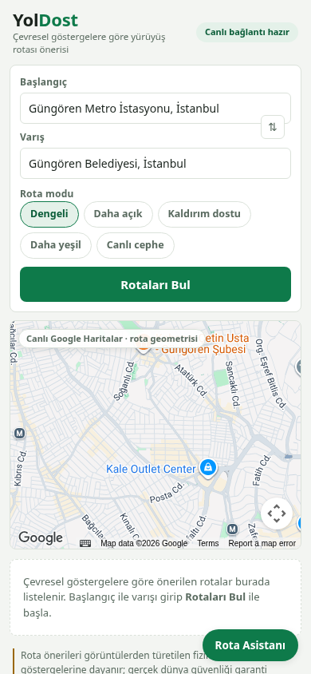
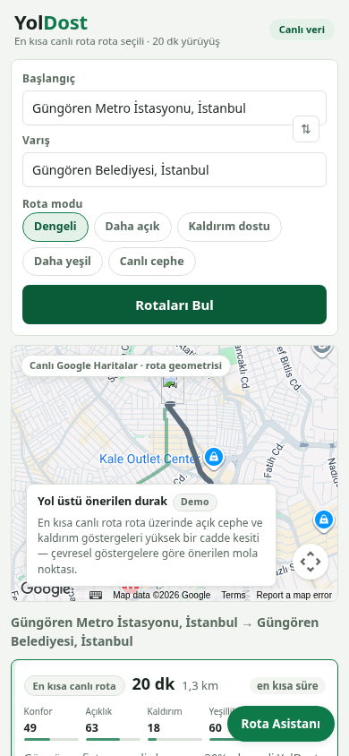
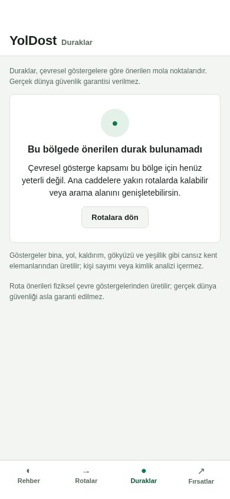
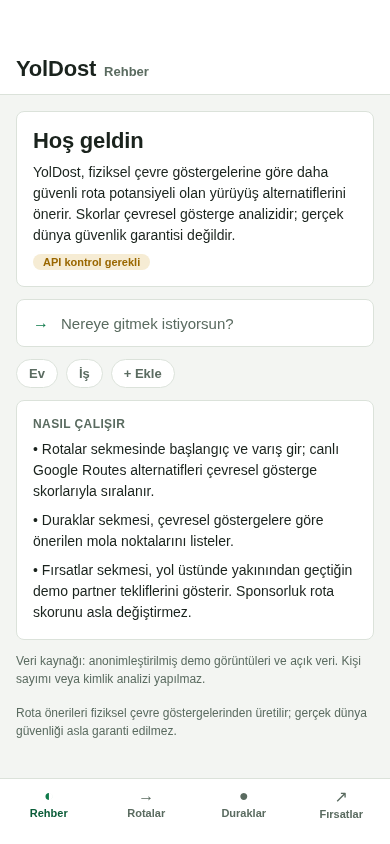
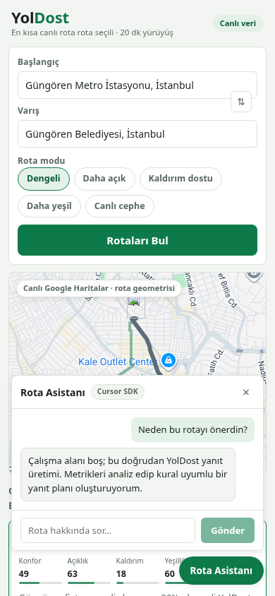
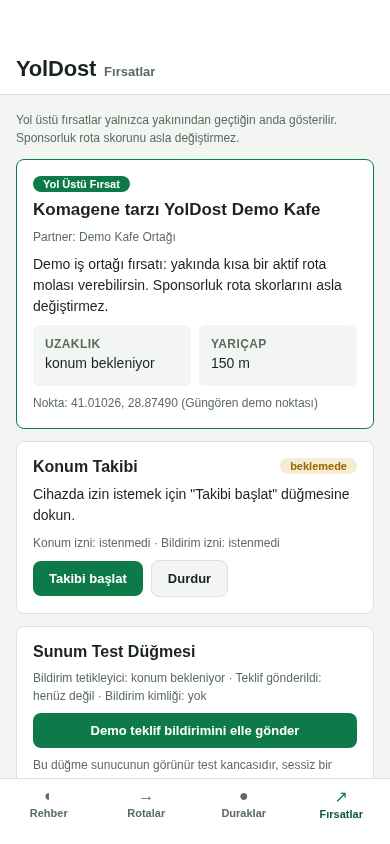
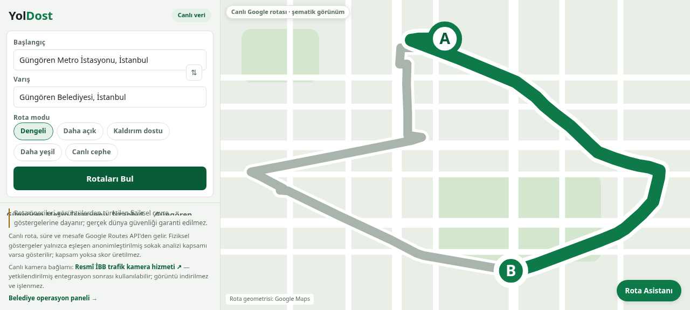
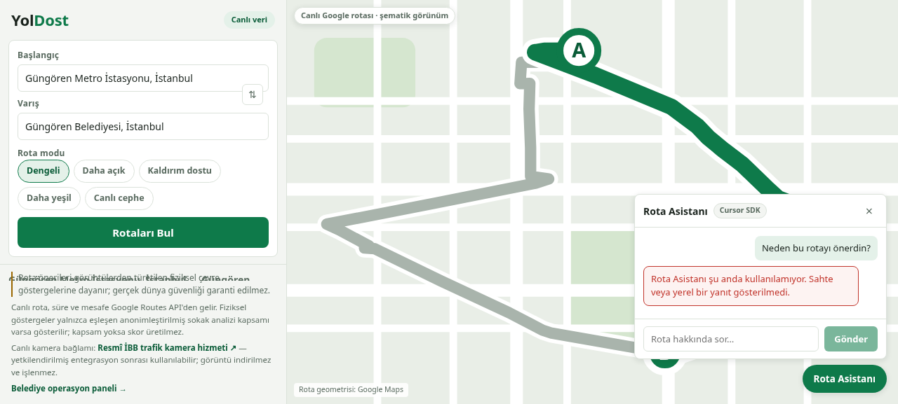
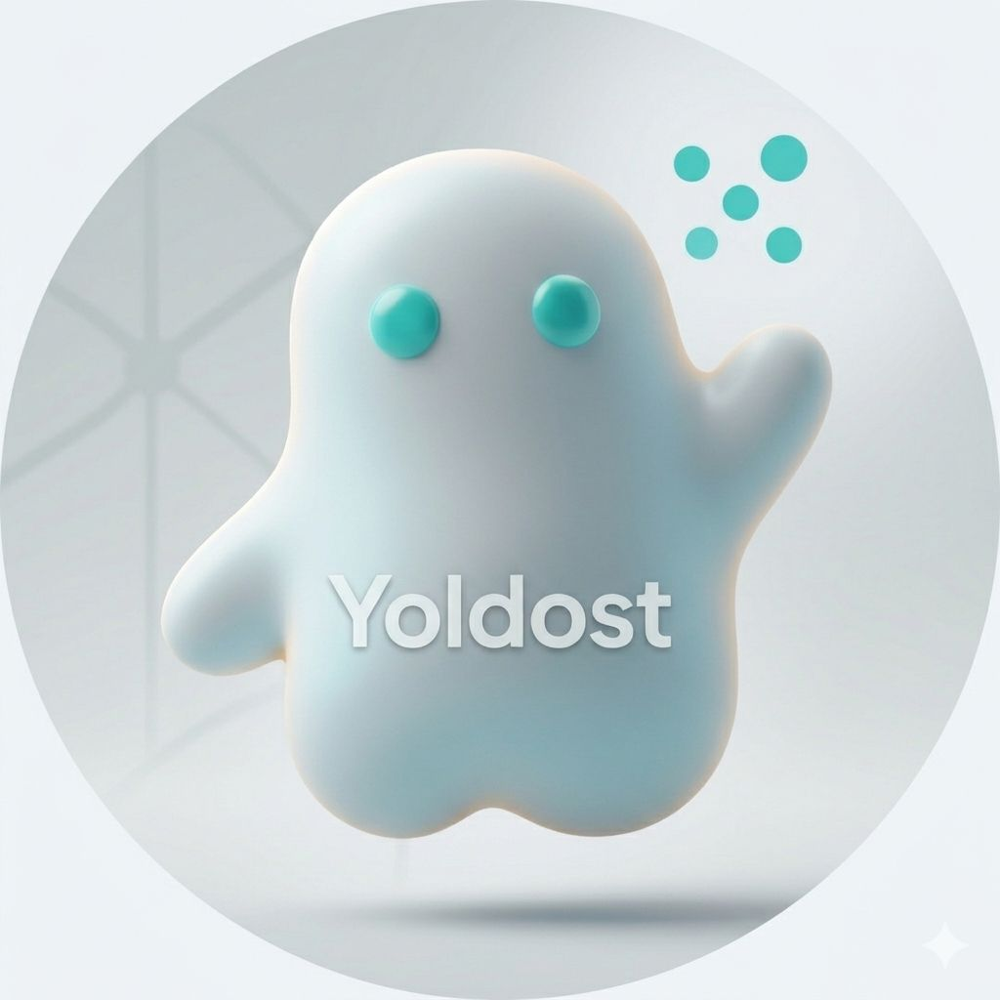

En kısa yol değil,
daha güvenli yol.
Şehirde yürümenin güven katmanını kuruyoruz: YolDost, Google Routes alternatiflerini açıklanabilir sokak zekâsıyla yeniden sıralar. Bugün canlı, bugün denetlenebilir.
Haritalar süreyi bilir,
sokağı tanımaz.
Navigasyon devleri “en hızlı”yı çözdü ve orada durdu. Ama şehirde yürüyen milyonlarca insan her gün başka bir karar veriyor:
Bu sorunun cevabı bugün hiçbir haritada yok. İnsanlar rotayı körlemesine seçiyor — ya da o yoldan hiç yürümüyor.
Sokağı gören harita.
YolDost, Google Routes’tan gelen canlı yürüyüş alternatiflerini beş açıklanabilir göstergeyle puanlar ve yeniden sıralar. Kullanıcı yalnızca rotayı değil, “neden bu rota” sorusunun cevabını görür.
Bir özellik değil;
kendi kendini güçlendiren bir sistem.
her sokak kalıcı veri varlığı
tipli sözleşmelerle servis edilir
aynı sözleşme, üç istemci
yeni analiz önceliği
- KVKK-önce boru hattı sonradan eklenemez — anonimleştirme kapısı mimarinin sıfırıncı adımı.
- Birikimli sokak-analiz varlığı: kapsama zamanla derinleşir; geç gelen sıfırdan başlar.
- Açıklanabilirlik sözleşmesi: her skor piksel oranına kadar denetlenebilir — kara kutu rakip güven üretemez.
- Skorlar önceden hesaplanır, istek anında değil — okuma ucuz, ölçek doğal.
- Eğitim (Modal) ile ürün (Render) fiziksel olarak ayrık — model riski ürünü düşüremez.
- Kapsama eşiği altında skor üretilmez — sistem kendi sınırını bilir ve söyler.
UI değil, davranış tasarlıyoruz.
Şeffaflık davranış yaratır
Her rota kartında tek cümlelik Türkçe gerekçe. Veri yoksa skor null —
bu dürüstlük kısa vadede rozet kaybettirir, uzun vadede alışkanlık kazandırır.
Tercihler = davranış segmentleri
Daha açık → gece yürüyeni · Kaldırım dostu → ebeveyn & erişilebilirlik · Daha yeşil → sağlık/keyif · Canlı cephe → turist. Mod seçimi bize segment söyler.
Sürtünmesiz kritik an
Tek girdi çifti → üç karşılaştırılabilir kart → tek dokunuş. “Neden?” kalırsa Rota Asistanı sohbetle kapatır — karar anında terk yok.
Navigasyonun kazananı belli.
Yürünebilirlik katmanı ise boş.
Gündem bizden yana
Yürünebilir şehir, 15 dakikalık şehir ve gece güvenliği her belediyenin ve her kent sakininin masasında. Talep var; ölçen ürün yok.
Maliyet eşiği kırıldı
Açık lisanslı sokak görüntüsü + olgun segmentasyon modelleri, sokak analizini saniyeler ve kuruşlar seviyesine indirdi. Dün imkânsızdı, bugün ucuz.
Uyum = bariyer
KVKK-önce mimarimiz taklit edilmesi en zor parça: anonimleştirme kapısı sonradan eklenmez, baştan kurulur. Rakipler için engel, bizim için çekirdek.
Analiz edilen her sokak kalıcı bir veri varlığına dönüşür. Kapsama büyüdükçe rota kalitesi, rota kalitesi arttıkça kullanıcı ve B2B değeri birlikte büyür — birleşik bir veri çarkı.
Vizyon: YolDost’u şehirlerin yürünebilirlik standardı yapmak — önce İstanbul, sonra yoğun her şehir. Rota uygulaması bir başlangıç; asıl ürün, şehrin yürüyüş zekâsı.
Anonimleştirme kapısından geçmeyen
hiçbir piksel sisteme giremez.
Mapillary / Hugging Face
geri döndürülemez maske
kişi/araç sınıfları atılır
(JSON)
Render · Frankfurt
Expo · canlı network
packages/contracts — JSON Schema + TypeScript tipleri; web, mobil ve Go aynı şemayı konuşur.
Google Routes API WALK alternatifleri her istekte canlı; kalıcı cache yok, attribution korunur.
Modal yalnızca eğitim compute’u; ürün backend’i her zaman Render’daki Go API.
Üç eksende ölçeklenir:
şehir · kullanıcı · senaryo.
Kod değişmez, kapsama değişir
Segmentasyon sınıfları (yol, kaldırım, bina, gökyüzü, yeşillik) evrensel kent öğeleri — modele şehir öğretmek gerekmez. Yeni şehir = yeni görüntü kaynağı + aynı boru hattı. Güngören → İstanbul → herhangi bir yoğun şehir.
Okuma ucuz, yük dağıtık
Skorlar önceden hesaplanır; istek anında yalnızca okunur. Stateless Go API (masterfabric-go katmanları) yatayda çoğalır; Next.js Vercel CDN’inde, Expo istemcide. Ağır CV işi kullanıcı yolunda değil.
Aynı altyapı, yeni işler
Sokak zekâsı katmanı yürüyüşle sınırlı değil: koşu & bisiklet rotaları,
saha personeli güzergâhları, turizm yürüyüşleri, erişilebilirlik denetimi, kent planlama raporları.
contracts paketi yeni istemciyi ucuzlatır.
Ölçekte tek değişken veri kapsaması — mimari değil. Sistem ilk günden çok-şehir, çok-istemci, çok-senaryo varsayımıyla tasarlandı.
Uygulamadan kareler · yeni arayüz






Görseller presentation/assets/app-01.png … app-06.png adlarıyla eklendiğinde otomatik görünür.
Veri yokken skor uydurmuyoruz.
Çünkü bu ürünün sattığı şey güven.
{
"id": "google-walk-1",
"distance_meters": 826,
"duration_seconds": 741,
"generated_live": true,
"analysis_coverage": 0,
"omnisight_score": null,
"recommendation_status":
"insufficient_analysis_coverage"
}
Kapsama eşiğin altındaysa sıralama Google’ın doğal sırasında kalır; rozet gösterilmez.
Rota geometrisi “Google Maps” ibaresiyle sunulur; kalıcı cache yok.
Gelir modeli tasarım gereği rota skoruna dokunamaz — güven, ürünün çekirdeği.
Slayt değil, ürün: şu anda yayında.
curl $API/health/live → 200 ✓ {"status":"alive"}
curl -X POST $API/api/v1/routes → 200 ✓ 2 canlı WALK alternatifi
curl $WEB → ✓ “Canlı bağlantı hazır”
expo typecheck + expo-doctor → 21/21 ✓
go vet ./... && go test ./... → ✓


Bu ekip fikirden canlı, çok istemcili ürüne tek günde çıktı — yürütme hızımız, en güçlü varlığımız.
Cursor’ı üç katmanda kullandık —
ikisi doğrudan üründe.
Cursor IDE + Ajan Kuralları
.cursor/rules/ altında iki zorunlu ruleset: hackathon.mdc (KVKK sınırları, zorunlu stack,
öncelik sırası) ve commits.mdc (milestone başına commit politikası). Tüm geliştirme bu kuralların
gözetiminde yapıldı.
Cursor SDK — Üründe
Rota Asistanı: POST /api/route-assistant Vercel sunucu tarafında
@cursor/sdk 1.0.16 + composer-2 ile rota metriklerini açıklar. Skoru değiştiremez;
koordinat, görüntü ve konum geçmişi almaz. Sandbox + plan mode. Mock yok — anahtar yoksa dürüst 503.
Cursor SDK — Otomasyon
npm run cursor:demo-readiness — Render, Vercel, Expo, Google Routes ve KVKK kanıt noktalarını tarayıp
Markdown demo hazırlık raporu ve Türkçe konuşma metni üretir. Dry-run modu ve güvenli çıkış kodlarıyla.
docs/ai-usage.mdHugging Face’ten üretime:
dört model, tek boru hattı.
| Model | Görev | Lisans |
|---|---|---|
nvidia/segformer-b0 · cityscapes |
Fiziksel gösterge segmentasyonu — yol, kaldırım, bina, gökyüzü, yeşillik | NVIDIA / Cityscapes |
google/vit-base-patch16-224 |
Aktivite/çevre bağlam sınıflandırıcısı (Modal’da fine-tune) | Apache-2.0 |
arnabdhar/YOLOv8-Face-Detection |
Yalnızca yüz bölgesi tespiti → geri döndürülemez maske | AGPL-3.0 |
Koushim/yolov8-license-plate-detection |
Yalnızca plaka bölgesi tespiti → geri döndürülemez maske | MIT |
Reubencf/streetview-global — Mapillary kaynaklı, CC-BY-SA-4.0.
300 dengeli örnek (150 kent + 150 banliyö, sabit seed 42), revizyon sabitlenmiş.
Kişi / sürücü / araç sınıfları kalıcılaştırılmadan atılır. Yüz-plaka modelleri kimlik için değil, yalnızca maskelenecek bölgeyi bulmak için çalışır.
Anonim veriyle, tekrarlanabilir GPU eğitimi.
(weak-label)
NVIDIA B200
240 / 60 split
Dürüst etiketleme: Bu metrikler weak_label_context_agreement ve
macro_f1_weak_label_context — yardımcı bağlam sınıflandırıcısının zayıf-etiket metrikleridir; piksel düzeyi etiket
olmadığından SegFormer için mIoU iddia edilmez. Modal yalnızca eğitim compute’udur, ürün backend’i değildir.
Checkpoint SHA-256 ile kayıtlı; sabit seed, dataset/model revizyonu ve hiperparametrelerle aynı sonuç tekrar üretilebilir.
Final ağırlık Hugging Face’te: huggingface.co/0xBatuhan4/yoldost-street-context-v2 (public).
Önce maskele, sonra analiz et. İstisnasız.
300 örneklik korpusta maskelendi; yalnızca sayaçlar saklanır, bölge içeriği asla.
Preflight manifest doğrulaması: Modal’a yükleme öncesi her dosyada hash + maske kontrolü.
✓ anonim türev, tespit metaverisi, sayaçlar
✕ ham kare, yüz/plaka pikseli, kimlik, plaka metni
Rota dürüst kalır,
gelir çevresinden gelir.
Yol Üstü Fırsatlar
Rota üzerindeki sponsorlu mekan teklifleri — skor ve sıralamaya asla dokunamaz.
Premium tercihler
Kayıtlı kişisel mobilite ayarları, gelişmiş rota tercihleri ve Güvenli Duraklar.
Kurumsal mobilite
Kampüs, otel, etkinlik ve işverenler için yürüyüş rotası ortaklıkları.
Belediye analitiği
Toplulaştırılmış kent planlama göstergeleri — yürünebilirlik raporları.
Kullanıcı partner noktasına 150 m yaklaşınca yerel bildirim:
canlı konum takibi + Haversine mesafe + expo-notifications. “Yol Üstü Fırsatlar”ın çalışan kanıtı.
Tasarım kuralı net: sponsor içerik rota skorunu değiştiremez ve güvenlik kanıtı gibi sunulamaz. Güven, satılık değil — ürünün kendisi.
Bugün ne değiliz, yarın neyiz.
Bugünkü limitler
- Render Postgres henüz bağlı değil — API bunu
database: not_configuredile açıkça raporluyor - Fiziksel analiz kapsaması demo ölçeğinde; şehir geneli değil
- Yeniden sıralama kapsama eşiği bekliyor — skor dürüstçe
null - Google rotaları cache’lenmez (politika gereği) — her istek canlı
Sırada
- Render Postgres + segment-rota eşleştirmesiyle gerçek yeniden sıralama
- Kapsama genişletme: mahalle → ilçe → şehir
- Belediye veri ortaklıkları — yalnızca yazılı yetki ve toplulaştırılmış veriyle
- Yeni arayüzün yayına alınması, saha testleri ve erişilebilirlik turu
Canlı akış: Web → Render → Google Routes → Asistan

Demo videosu Kayıt tamamlanınca dosyayı buraya bırakın: presentation/demo.mp4Sunum fallback sırası: ① canlı network demosu → ② bu video kaydı → ③ anonimleştirilmiş sabit fixture.
Yürüyüşün standardını
birlikte kuralım.
En kısa yol değil, daha güvenli yol — her adımda içine sinen rota.
Cursor × ALT+TAB Hackathonu 2026 · Pilot & ortaklık görüşmelerine açığız · Tüm kanıtlar repo içinde: docs/ · reports/ · presentation/